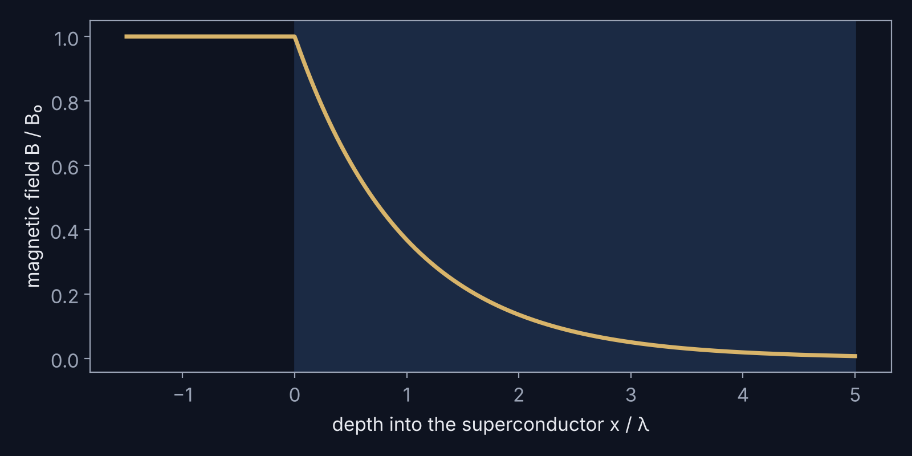
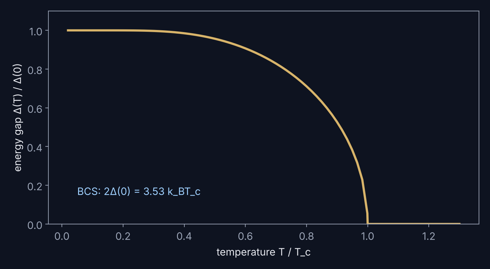
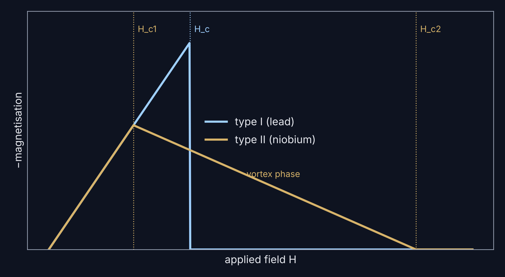
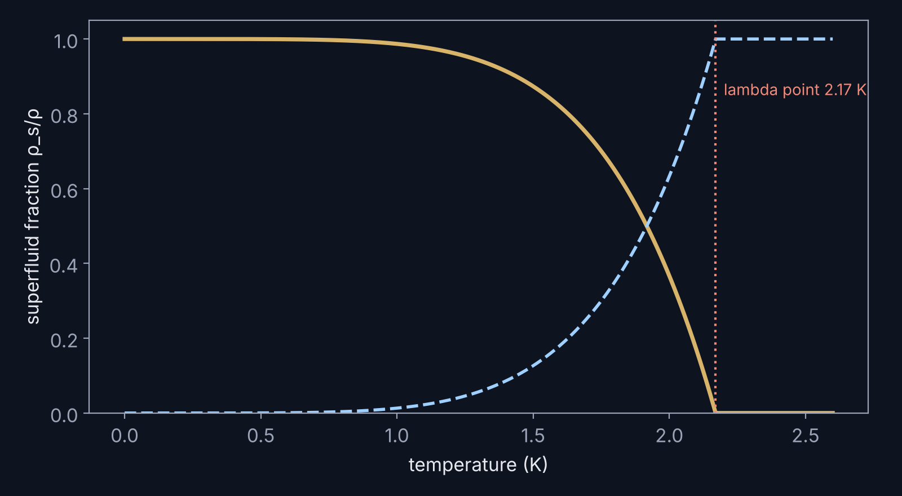

The macroscopic wave
Superconductivity and superfluidity look different – one is about electric current in metals, the other about helium flowing without friction – but they rest on the same idea. At low temperatures a macroscopic number of particles gather in one and the same quantum state, described by a single complex wave function for the whole piece of matter:
Here $n_s$ is the density of "condensed" particles and $\theta$ a phase that is coherent across the whole sample. The flow of particles is set by how the phase changes from place to place:
To stop the flow the phase must be changed across the whole sample at once, and a single impurity or collision cannot do that. That is why the flow is stable. In a superconductor the particles are Cooper pairs of electrons with charge $-2e$ and mass $m^* = 2m_e$. In helium-4 they are helium atoms. The rest of the page is about the measurable consequences of this one wave function.
The London equation and the penetration depth
A superconductor is more than a perfect conductor. A perfect conductor would hold on to whatever magnetic field was in it when it became cold. A superconductor pushes the field out (the Meissner effect). The brothers Fritz and Heinz London explained this in 1935 with a simple argument. The electrons in the superconducting component are accelerated freely by an electric field:
Taking the curl and using Faraday's law, $\nabla\times\vec E = -\partial\vec B/\partial t$, and Ampère's law, $\nabla\times\vec B = \mu_0\vec J$, gives an equation for $\partial\vec B/\partial t$. The Londons' step was to assume that it holds for the field itself, not only for its change:
The solution outside a plane surface is $B(x) = B_0 e^{-x/\lambda}$: the field dies away exponentially over the penetration depth $\lambda$. With $n_s \approx 10^{28}\ \mathrm{m^{-3}}$

The London equation says something deeper, as Fritz London himself realised: it follows from the wave function being "rigid" and not changing when a magnetic field is switched on. It was the first suggestion that superconductivity is a quantum phenomenon on a macroscopic scale.
The isotope effect: the lattice is involved
In 1950 two groups independently measured the transition temperature of different isotopes of mercury. The result was
where $M$ is the mass of the nuclei. Heavier isotopes become superconducting at a lower temperature. The electrons alone know nothing about the nuclear mass, so the lattice vibrations – the phonons – had to be involved. A harmonic oscillator's frequency is $\omega \propto \sqrt{k/M}$, and the isotope effect shows that the energy scale of superconductivity is the phonon energy $\hbar\omega_D$. Herbert Fröhlich had proposed the same year that electrons can attract each other by exchanging phonons. The first electron pulls the positive ions slightly together; when it has gone, there is for a moment an excess of positive charge, which draws in the next electron. The ions are slow, so the attraction is delayed – and that is why it can overcome the direct Coulomb repulsion.
The BCS gap
Bardeen, Cooper and Schrieffer showed in 1957 that even a weak attraction makes the electrons near the Fermi surface form pairs with opposite momentum and opposite spin. The pairs overlap enormously – within one pair sit millions of other pairs – and they are described by one common wave function. It costs the energy $2\Delta$ to break a pair. BCS theory gives
where $N(0)$ is the density of electron states at the Fermi energy and $V$ the strength of the phonon-mediated attraction. The exponential explains why $T_c$ is so low: even with $N(0)V = 0.3$ the factor is $e^{-3.3} \approx 0.04$, so $T_c$ is a few per cent of the Debye temperature, typically 1–20 K. The gap decreases with temperature and vanishes at $T_c$:

The gap can be measured directly. For niobium ($T_c = 9.2$ K) $2\Delta \approx 3.53\cdot k_B\cdot 9.2\ \mathrm{K} \approx 2.8$ meV. Photons with a frequency above $2\Delta/h \approx 0.68$ THz can break the pairs, and below that the superconductor is transparent to the radiation – measured in the far infrared in 1956–57. The gap can also be seen when electrons tunnel through a thin insulator into the superconductor: below the voltage $\Delta/e$ almost no current flows (Ivar Giaever 1960).
The size of a Cooper pair, the coherence length, is
about 1.6 µm in aluminium but only a few nanometres in high-temperature superconductors. The ratio of $\lambda$ to $\xi$ decides how the superconductor behaves in a magnetic field.
Type I and type II
At the boundary between a normal and a superconducting zone it costs energy to make the wave function grow from zero (over the length $\xi$), but energy is gained by letting the field penetrate a little (over the length $\lambda$). Ginzburg and Landau showed in 1950 that everything depends on the ratio
For $\kappa < 1/\sqrt2$ the interface is costly, and the superconductor expels the field completely until, at the critical field $H_c$, it suddenly turns normal: type I (most pure metals such as lead and tin). For $\kappa > 1/\sqrt2$ it pays to let the field in along thin vortex lines: type II. Between $H_{c1}$ and $H_{c2}$ the sample is filled with vortices, and only at
does superconductivity disappear. Because $\xi$ can be very small, $\mu_0 H_{c2}$ can exceed 20 tesla in Nb₃Sn and 100 tesla in the cuprates. That is why MRI scanners and accelerator magnets are built from type II superconductors.

Flux quanta: the proof of pairing
Follow the wave function once round a superconducting ring. It must end with the value it started with, so the phase must change by a whole multiple of $2\pi$. Inside the ring the current is zero, and combining the phase with the vector potential $\vec A$, the condition says that the magnetic flux through the ring is quantised:
Fritz London predicted the flux quantum with $q = e$. In 1961 two groups (Deaver and Fairbank at Stanford, Doll and Näbauer in Munich) measured it in tiny tin and lead cylinders and found
– half of London's value. The factor 2 is the direct proof that the charge carriers are pairs of electrons. Each vortex in a type II superconductor carries exactly one flux quantum.
The Josephson equations
When two superconductors are separated by an insulator a couple of nanometres thick, their wave functions overlap weakly. Brian Josephson showed in 1962 that a current of Cooper pairs can flow that depends on the phase difference $\varphi = \theta_2 - \theta_1$, and that a voltage makes the phase run:
With no voltage, a direct current up to $I_c$ can flow without any voltage drop. With a DC voltage $V$ the current oscillates at the frequency $f = 2eV/h = 483.6$ MHz per µV. When the junction is irradiated with microwaves of frequency $f$, voltage steps appear at exactly $V_n = nhf/2e$ – Shapiro steps. Because only fundamental constants enter, a chain of thousands of Josephson junctions is now the world's voltage standard.
In a SQUID with two junctions in a ring the two currents interfere, and the maximum supercurrent varies with the flux through the ring as
One period corresponds to one flux quantum. A ring of 1 mm² thus registers a field change of $\Phi_0/A \approx 2\cdot10^{-9}$ T per period, and with electronics that can divide the period into a million parts one reaches below $10^{-14}$ T – enough to measure the magnetic field of the brain.
Helium-4: a Bose–Einstein condensate in a liquid
Helium liquefies at 4.2 K and remains liquid right down to absolute zero at normal pressure – the atoms are so light and the bond between them so weak that zero-point motion prevents them from freezing. At 2.17 K, the lambda point, the liquid changes character. The specific heat has a spike shaped like the Greek letter λ, the liquid stops boiling (it conducts heat so well that no bubbles form), and it flows through capillaries so fine that no ordinary liquid can pass.
Fritz London proposed in 1938 that the transition is a Bose–Einstein condensation. For an ideal gas of bosons of density $n$ condensation occurs at
With the density of helium, $n = 145\ \mathrm{kg/m^3} / 6.65\cdot10^{-27}\ \mathrm{kg} = 2.18\cdot10^{28}\ \mathrm{m^{-3}}$, the formula gives 3.1 K – close to 2.17 K, even though helium atoms are far from an ideal gas. Neutron scattering has shown that only about 8 % of the atoms sit in the lowest momentum state at $T = 0$, because the interactions push the rest out. Yet the whole liquid is superfluid.

The two-fluid model (Tisza and Landau) explains the strange experiments. Heat helium behind a porous plug and the superfluid part flows towards the heat to even out the concentration, and the pressure can make a fountain spurt up – the fountain effect. A thin film of superfluid helium creeps up the wall of the container and drips off the bottom outside. And the two components can oscillate out of phase: "second sound" is a temperature wave with a speed of about 20 m/s.
Quantised vortices
If a bucket of superfluid helium is rotated, Landau's theory says the liquid should stay still, because the flow $\vec v_s = (\hbar/m)\nabla\theta$ is irrotational. But in experiments the liquid rotates along, just like ordinary water. Lars Onsager and Richard Feynman explained around 1950 that the liquid is threaded by thin vortex lines. Round each line the phase changes by $2\pi$, and the circulation is quantised:
Joe Vinen measured the quantum in 1961 with a vibrating wire in rotating helium. The number of vortices per area in a bucket rotating at angular velocity $\Omega$ is $2\Omega m_4/h$ – about 13,000 per cm² at one revolution per second. The vortices in superfluid helium are thus siblings of the flux quanta in a type II superconductor: both are places where the wave function vanishes and the phase winds once round.
Helium-3 and Leggett
Helium-3 has an odd number of nucleons and is a fermion. It cannot condense, but its atoms can form pairs like the electrons in a superconductor. This happened at 2.6 mK (at melting pressure), when Osheroff, Lee and Richardson discovered two new phases, A and B, in 1972. The pairs in helium-3 are far more complicated than Cooper pairs in metals: their spin is 1 and they have orbital angular momentum 1 (p-wave pairs). The order parameter therefore has many components, and the liquid has an internal structure reminiscent of a liquid crystal.
The nuclear magnetic resonance in the A phase lay at a frequency that was completely wrong according to theory. Anthony Leggett showed at Sussex that the weak magnetic dipole force between the nuclear spins – normally utterly negligible – has an enormous effect because all the pairs are locked in the same orientation. It is as if a whole compass reacts where a single magnetic needle would not. He received the Nobel Prize in 2003. Superfluid helium-3 has since been used as a laboratory for cosmology: vortices and "textures" in the liquid resemble defects that may have formed in the early universe.
Bose–Einstein condensates in atomic gases
In helium the atoms interact strongly. A pure Bose–Einstein condensate in a dilute gas was first made in 1995 by Eric Cornell and Carl Wieman with rubidium-87 at 170 nanokelvin, and shortly afterwards by Wolfgang Ketterle with sodium. The atoms are trapped with laser light and magnetic fields and cooled by evaporation: the hottest atoms are allowed to escape and the rest settle down. At the gas's low density, about $10^{20}\ \mathrm{m^{-3}}$, the formula for $T_{\mathrm{BEC}}$ gives just a few hundred nanokelvin. The three received the Nobel Prize in 2001.
In 1997 Ketterle's group let two condensates flow into each other and saw interference fringes – direct proof that a condensate is one wave with a well-defined phase. In 2004 fermions (potassium-40) were made to pair and condense, and by tuning the interaction with a magnetic field one can go continuously from loosely bound Cooper pairs (BCS) to tightly bound molecules (BEC). Superconductivity, superfluid helium-3 and Bose–Einstein condensation thus hang together in a single theory.
Problems
Answer: $\lambda = \sqrt{m/(\mu_0 n_s e^2)} \approx 43$ nm. (Measured: about 37 nm.)
Answer: $\Delta B = \Phi_0/A = 2.07\cdot10^{-15}/5\cdot10^{-7} \approx 4\cdot10^{-9}$ T – about one twelve-thousandth of the Earth's field per period.
Answer: $n = 2.18\cdot10^{28}\ \mathrm{m^{-3}}$ gives $T_{\mathrm{BEC}} \approx 3.1$ K. The measured value is 2.17 K, because the atoms interact strongly; some of them cannot get into the ground state.
Answer: $2\Delta = 3.53\,k_BT_c \approx 0.36$ meV, $f = 2\Delta/h \approx 87$ GHz.
Further reading
- Michael Tinkham: Introduction to Superconductivity (2nd ed., Dover 2004)
- A.J. Leggett: Quantum Liquids (Oxford 2006)
- D.R. Tilley and J. Tilley: Superfluidity and Superconductivity (3rd ed., IOP 1990)
- Richard Feynman: The Feynman Lectures on Physics, vol. III, chapter 21, "The Schrödinger Equation in a Classical Context: A Seminar on Superconductivity"
- Further on mhgfysik.dk: Superconductivity and superfluidity, Statistical mechanics